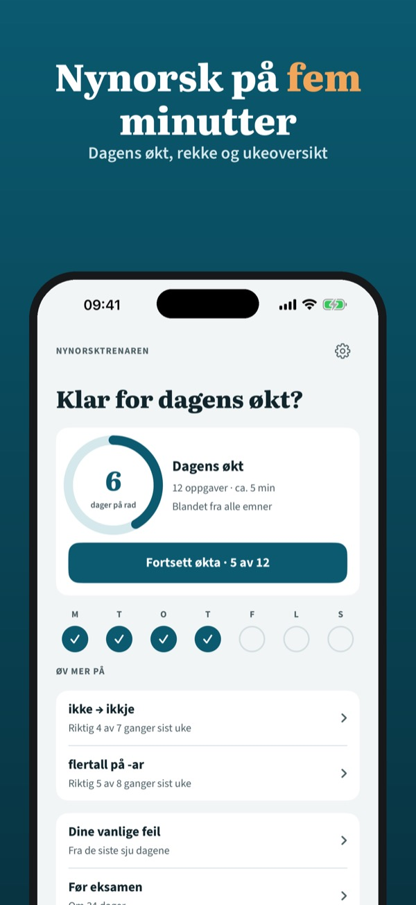
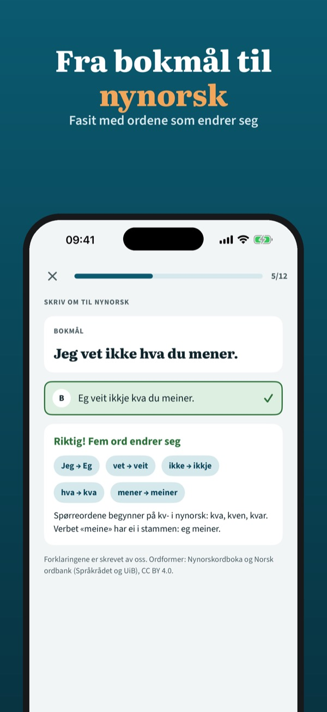
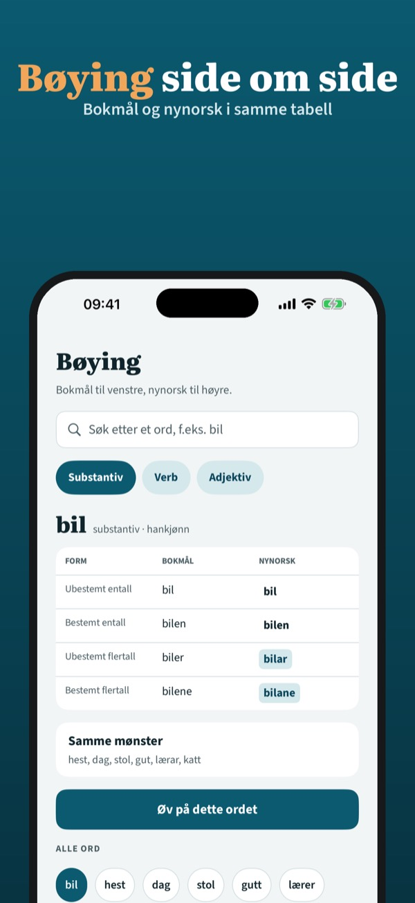

Øv på nynorsk fem minutter
Bli trygg på sidemålet: korte økter hver dag, bøyingstabeller og de feilene du gjør oftest. Fra bokmål til nynorsk – uten internett.



Nynorsktrenaren er en øvingsapp for deg som har nynorsk som sidemål. Du får korte oppgaver, fasit og forklaring – ikke en ordbok.
Dagens økt, to emner, ordpar og vanlige feil kan brukes uten kjøp. Fullversjonen er et engangskjøp som låser opp alle emner, alle bøyingstabeller, repetisjon før eksamen og full statistikk. Ingen abonnement.
Ordformer og bøying fra Nynorskordboka og Bokmålsordboka (Universitetet i Bergen og Språkrådet) og Norsk ordbank, CC BY 4.0. Appen er ikke knyttet til Språkrådet, UiB eller Utdanningsdirektoratet. Oppgavene er laget av oss.
Terms of Use (EULA): https://www.apple.com/legal/internet-services/itunes/dev/stdeula/
Privacy: https://baytechbv.github.io/privacy/nynorsktrenaren-no/